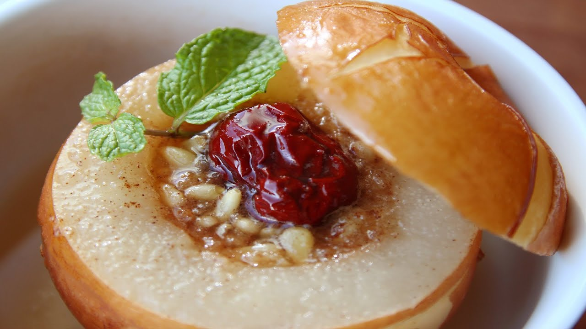
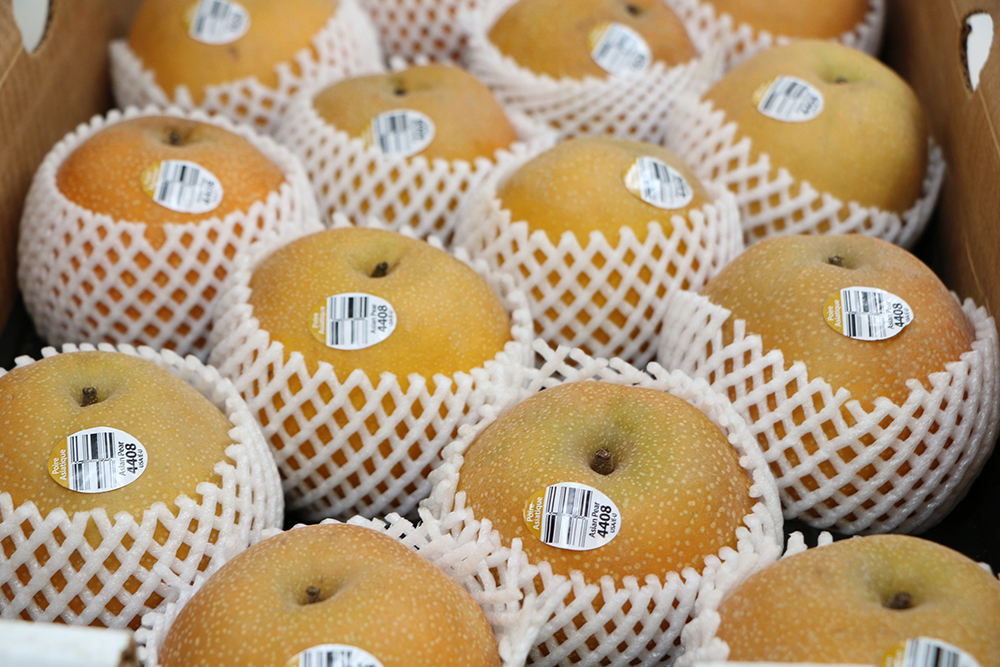

Have a Pear-Fect Day
Poached Pears: A Delicate Dessert
This is a box

Asian poached pears are a delightful and elegant dessert that combines the subtle sweetness of pears with aromatic spices. This dish is popular in many Asian cuisines, where it is often served as a light and refreshing end to a meal. The pears are typically poached in a fragrant syrup made from ingredients like ginger, star anise, and cinnamon, which infuse the fruit with a rich and complex flavor.
Choosing the Right Pears
For the best results, it's important to choose the right type of pears. Asian pears, also known as Nashi pears, are ideal for poaching due to their firm texture and crispness. These pears hold their shape well during cooking, ensuring that the final dish has a pleasing appearance and texture. Look for pears that are ripe but still firm to the touch.
The Poaching Liquid
The poaching liquid is the key to infusing the pears with flavor. A typical poaching liquid might include water, sugar, and a variety of spices. Common additions include slices of fresh ginger, whole star anise, cinnamon sticks, and sometimes a splash of white wine or sake. The liquid is brought to a simmer to dissolve the sugar and release the aromas of the spices.
The Pears
Once the poaching liquid is ready, the peeled and cored pears are added to the pot. The pears should be fully submerged in the liquid to ensure even cooking. They are then gently simmered until tender, which usually takes about 20-30 minutes depending on the size and ripeness of the pears. It's important to monitor the pears closely to avoid overcooking them.Suggestions
Asian poached pears can be served warm or chilled, depending on your preference. They are often accompanied by a drizzle of the poaching syrup, which can be reduced to a thicker consistency if desired. For an extra touch of elegance, consider garnishing the pears with a sprinkle of toasted sesame seeds or a dollop of whipped cream.Benefits
In addition to being delicious, Asian poached pears offer several health benefits. Pears are a good source of dietary fiber, which aids in digestion and helps maintain a healthy weight. They also contain vitamins C and K, as well as antioxidants that support overall health. Poaching the pears in a lightly sweetened syrup allows you to enjoy their natural sweetness without the need for excessive added sugars.Resepie
- Ginger
- fresh
- Honey
- Pine Nuts
- Pear